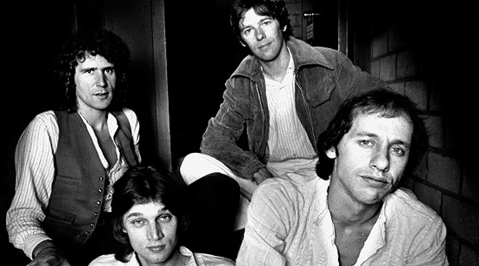
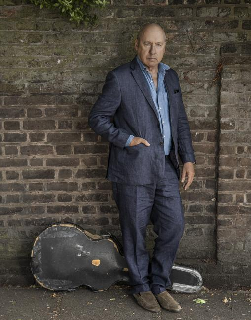

Dire Straits – Del mejor al aún mejor
7 de Diciembre de 2018
Dire Straits (significa “Situaciones apuradas”, refiriéndose a lo económico, ya que la banda apenas podía pagar el alquiler en sus inicios, en 1977), es sin duda, uno de los cinco mejores grupos de los años 80, junto con The Police, The Smiths, U2 o The Cure (entre otros) y también uno de los 15 más sobresalientes de siempre. Se cumplió este año el 40 aniversario de su debut de 1978, así que de tal modo, estableceré un ranking basándome en que todos sus discos poseen una excelsa edificación, resultando extremadamente dificultoso confeccionar dicha clasificación. Y hablar de esta formación, es sin duda, referirse igualmente a un guitarrista de una desbordante y peculiar hechicería como es Mark Knopfler.
Como él mismo también ha declarado este 2018, tras lanzar su nueva obra Down the Road Wherever, que no retornaría nunca con los propios Straits, hallamos otro motivo más para, precisamente, rememorar la superlativa y aclamada discografía de la agrupación británica, del cual uno siente nostalgia en su ausencia. Es, precisamente, junto a sus antiguos camaradas donde opino que Mark tuvo, quizás, sus momentos más inspirados, aunque él mismo manifieste que su música actual se encuentra más avanzada, recalco.
No comentaré nada de recopilaciones o LPs en vivo como Alchemy, ya que ésto último también ya lo hice en el artículo de varios autores Nuestros discos en directo favoritos. Únicamente, trataré los álbumes de estudio, los cuales fueron pocos pero todos realmente buenos y variados y, aunque no guarde tanta importancia como lo comentado hace un instante, tampoco está demás añadir el dato objetivo e irrebatible de que la propia formación inglesa ha vendido alrededor de 100 millones de ejemplares en todo el Globo.
Ir a noticiaMiembros de UB40 y Dire Straits comparten exposición en Estepona
19 de Noviembre de 2018
Brian Travers de UB40 y John Illsley de Dire Straits expondrán en Kempinski Hotel Bahía de Estepona y en exclusiva los bocetos de las obras de arte que sirvieron de portadas de los álbumes de estos míticos grupos musicales. Será el 22 de noviembre de 2018 y se podrá admirar hasta el 10 de enero de 2019. La exposición consta de 20 obras de estos dos artistas.
For the Many es el primer álbum de estudio de UB40 en seis años y celebra el 40 aniversario de la banda. La portada es un tributo a los supervivientes de la Torre Grenfell, una representación múltiple de las torres, de colores primarios y brillantes. Con ello se quiere expresar la fuerza y determinación del hombre y el gran impulso creado cuando trabajamos juntos y pensamos en los demás. El estilo de esta obra mezcla de la novela gráfica contemporánea y el arte urbano. Brian Travers utilizó solo una parte de esta pintura para la portada del álbum For the Many. Asimismo ha creado 40 copias de la portada de edición limitada, que estarán a la venta en el hotel durante la exposición. Otra de las obras que se exhibirán en esta nueva muestra es la titulada “In Flanders Fields”, un homenaje a los héroes de la Primera Guerra Mundial.
John Illsley, de Dire Straits, también presenta el boceto de la obra que apareció en el álbum de 2008 Beautiful You, una pintura al óleo que representa una guitarra sobre un fondo abstracto azul y blanco. Además de la portada de este álbum, John trae otros nueve trabajos, incluyendo dos nuevas y preciosas obras abstractas llamadas Puglia y Headland.
Tanto Brian Travers como John Illsley siempre han tenido una pasión por la pintura, ambos han estudiado en la escuela de arte antes de dedicarse a la música. Sin embargo, los tiempos de grabación y las giras les impidieron producir las obras que ellos querían realizar. Desde que su ritmo es ahora menos frenético en la música, tienen más tiempo para centrarse en sus proyectos de arte, produciendo una amplia gama de obras maravillosas y exponiéndolas en todo el mundo. En la actualidad aúnan su arte y su música y sus poderosas portadas de álbumes muestran cómo estas dos actividades creativas pueden ser complementarias.
La inauguración de la exposición, que incluye una glamurosa fiesta, tendrá lugar el jueves 22 de noviembre de 20.30 horas a 22.30 horas, y ambos artistas viajarán a España para asistir al evento. Se trata de una maravillosa oportunidad para conocer a estas leyendas y aprender sobre su arte, su inspiración y sus largas y exitosas carreras musicales.
Ir a noticiaMark Knopfler: «No volvería con Dire Straits, mi música ha avanzado mucho»
11 de Noviembre de 2018
Un día de otoño, allá por mediados de los setenta, Mark Knopfler paseaba por el barrio portuario londinense de Deptford cuando comenzó a llover a cántaros. El guitarrista corrió a buscar refugió y encontró un pequeño pub con actuaciones en vivo. Entró, pidió una cerveza y comenzó a escuchar a la banda que había sobre el escenario. Su música no le llamó especialmente la atención, pero sí su nombre: Sultans of Swing. Ese y otros muchos viejos recuerdos son los que han dado forma a «Down the road wherever», un álbum sin duda más sexy que las plácidas incursiones en el folk que ha venido acometiendo en los últimos diez años, y cuyo título está inspirado en un verso homónimo de su colega (ya fallecido) Chet Atkins, con el que describió precisamente el barrio de Deptford, donde se formaron los Dire Straits.
Producido por Knopfler y Guy Fletcher y grabado en su propio estudio (British Grove, ubicado en Londres), cuenta con la participación de músicos como Nigel Hitchcock, Tom Walsh, Glenn Worf, Ian «Ianto» Thomas, Robbie McIntosh, Imelda May o Katie Kissoon, entre muchos otros. Un auténtico «dream team» al servicio del guitarrista sin púa, que arrancará la gira de presentación del disco en España el próximo mes de abril (actuará en Barcelona, Valencia, Madrid, Córdoba, La Coruña y Pamplona).
Ir a noticiaLa experiencia Dire Straits
3 de Noviembre de 2018
La legendaria banda Dire Straits, dirigida por Mark Knopfler, quien escribe la historia de Rock con sus 120 millones de álbumes, vende los estadios más grandes para sus conciertos y gana popularidad en los años 70. La enorme popularidad del grupo duró 15 años, pero el gran interés en la banda continuó incluso después de la salida de Marek, quien se fue a finales de los años ochenta para perseguir sus propios proyectos.
Actualmente, la agrupación de Dire Straits con el titular EXPERIENCE regresa después de años a la gira mundial, con la participación de varios miembros de la composición inicial, presentando un espectáculo inolvidable.
Músicos que no tienen precio, poseedores de los Premios Grammy como el saxofonista Chris White, el guitarrista Terence Reis, el baterista Chris Whitten, el teclista Simon Carter, Tim Walters y James Powell recorren las ciudades del mundo y sus conciertos se agotan monótonamente.
Ir a noticia